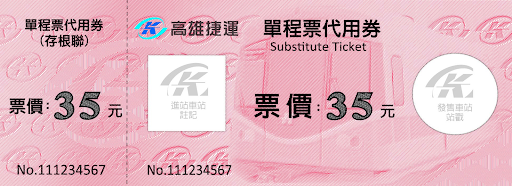

乘車方式
- 單程票
- 電子票證
- 信用卡支付—實體信用卡、行動裝置(NFC)、LINE PAY乘車條碼
- 定期票
- 其他票種
說到高雄你不能不知道的事，高雄市的發展始自19世紀末開港，舊稱「打狗」，因受海洋氣候調節，陽光普照、氣候宜人，有獨特的「海洋首都」特性，最著名的景點就是85大樓、愛河、駁二捷運，近幾年捷運的完工，讓高雄市區的便利性和繁榮程度，又更上一階，今天就讓我們來為大家好好的介紹高雄捷運吧！
高雄捷運依據里程計費，5公里內的基本票價為20元；起訖站距離5-17公里，每增加2公里，加收5元；起訖站距離17-20公里，每增加3 公里，加收5元
以高雄捷運來說，使用信用卡有常駐 85 折的優惠，對通勤族來說較便利。
持電子票證(一卡通 (i PASS)、遠鑫有錢卡(happycash)、悠遊卡(EASYCARD)、愛金卡(icash))之旅客，可於月台或列車上驗票機螢幕下方處感應，完成驗票成功後搭乘
進站時，將車票輕觸感應區，當閘門發出「噹」鋼琴聲及螢幕顯示綠色通行箭頭時，門檔會打開讓旅客通行；出站時，閘門感應並回收車票後，即可出站。

包含腳踏車客票、社福單程票、單程代用卷，依民眾需求選購
1.限定對象為全國各公私立高中(職)、國中、國小校外教學活動(畢業旅行)之師生(限20人以上之團體搭乘為主)。 2.另針對人數達50人以上之學生團體(含畢旅師生)，提供專案優惠票價。 2. 團體人數達50人以上之學生團體(含畢旅師生)，提供每人每次10元之單程票優惠。
供符合購票資格十人以上(含)團體旅客購買以搭乘捷運。搭乘捷運依票價圖之8折收費。
高雄捷運外觀 :銀色底綠色拉線
(相似:台北-西門 香港-旺角)
車站編號為C11。站區位於公園二路南側，真愛碼頭內，定位為環狀輕軌「特色站」，是全線唯一高架車站且設有電扶梯與電梯，也被譽為全線最美車站。設置側式月台[1]，站下可通行，兩側月台皆設有橋梁及人行步道，順行月台即連接高雄臨港線舊鐵橋，過橋後下旋轉梯即為愛河親水步道；逆行月台可通往高雄流行音樂中心各園區，除人行步道外過橋後亦設有無障礙坡道真愛碼頭(12號碼頭)位於愛河的出海口處，碼頭有兩座雪白風帆分別對著高雄市區及旗津渡輪碼頭，象徵高雄市與海港對話，為了融入節約能源的概念，兩座風帆皆有太陽能發電板及發電量顯示器的裝置，除了兩座獨具特色的雪白風帆之外，真愛碼頭另設置真愛咖啡、觀景休憩高架木棧平台以及周遭的植栽綠化景觀。在高雄市政府的規劃之下，真愛碼頭延續了愛河水岸的休閒觀光並加以串聯，市民可在這裡悠閒的散步或欣賞愛河的悠美，目前真愛碼頭有規劃常態性固定觀光航線，遊客可搭乘「真愛輪」與「光榮輪」，從真愛碼頭啟航至旗津漁港觀賞漁港風光，因此真愛碼頭已成為高雄觀光旅遊的重要休憩點。
(相似:台北-松山國際機場 香港-香港國際機場)
本站為臺灣最早之機場聯外捷運站。值得一提的是，由於英文站名過長的緣故，所以車廂內LED跑馬燈顯示縮寫成「R4_Kaohsiung Int'l Airport」，與台北捷運文湖線南港軟體園區站、淡水信義線大安森林公園站、環狀線新北產業園區站、新北捷運淡海輕軌淡水行政中心站、桃園機場捷運新北產業園區站、機場第一航廈站、機場第二航廈站和桃園體育園區站並列為臺灣站名最長之鐵路車站
(相似:台北-101台北世貿站 香港-黃大仙站)
百年老店、廟宇古蹟、軍史文化，左營是最知名的地區之一，鄰近高雄市中心，交通便利性高，向來是旅客們初抵高雄不會錯過的點位，高鐵站正位於左營，做為旅行的開端也相當合適！一起漫走充滿歷史意境的街道巷弄，在舊城層疊的回憶裡，看見不一樣的左營！高雄捷運紅線巨蛋站附近、大型購物中心漢神巨蛋已於2008年7月開幕，並結合附近瑞豐夜市形成「巨蛋商圈」，被視為北高雄近期崛起的重要商圈。本區亦為台鐵、高鐵重要交通站點所在，高鐵左營站位於本區北側，與台鐵新左營站、捷運左營站連通共站；台鐵新左營站內2至4層有環球購物中心新左營車站店，高鐵站區旁則有新光三越高雄左營店（分為彩虹市集及本館兩棟，以地下通道、天橋與捷運/高鐵站連通）。台鐵除新左營站外，其南方1.9公里處尚有台鐵左營（舊城）站。
美麗島站，位於高雄市新興區，為高雄捷運紅線、橘線交會的捷運車站，為高雄捷運初期路網唯一的轉乘車站，車站位於中山一路與中正三路路口（大港埔圓環）下方，為高雄市中心道路要衝。車站編號的部分，紅線為R10，橘線為O5。本站因位於昔日大港埔大字的中心（雖然大字下轄的大港埔聚落較靠近中央公園站），通車前計畫暫名為大港埔站。美麗島站起名於1979年12月10日在此地爆發、震驚台灣社會和影響民主運動發展的美麗島事件。本站由日本建築師高松伸所設計，以祈禱為主題象徵。車站內部之公共藝術作品—光之穹頂，乃由義大利藝術家水仙大師（Narcissus Quagliata）親手打造。本站亦是臺灣第一個以葡萄牙文為譯名的捷運車站。由於車站付費區的複雜特性，此站刷卡或單程票同站進出15分鐘內免重新計費。

光之穹頂光之穹頂設於本站地下一樓穹頂大廳，由國際知名藝術家水仙大師(Maestro NarcissusQuagliata)親手繪製，並由德國百年Derix手工玻璃工作坊製作，歷時四年半，直徑達30公尺，面積為660平方公尺。依創作主題共分成四大區塊(quadrant)，共有16個小區塊(section)，1,252扇窗(window)，每面窗有2至9片「窗面」(panel)，每面窗面有3-100片玻璃鑲嵌而成。「光之穹頂」上的各個人體交相呼應，所傳達的「包容」精神，更展現作品「水」、「土」、「光」、「火」四大區塊的意涵，呈現出人在世界裡，從誕生、成長、榮耀到毀滅，而後重生的輪迴過程。水仙大師的創作理念表示：「透過這件作品，我想傳達人性的價值，人與人、環境、及萬物之間的關係；人天合一的境界，以及人心在仇恨鬥爭中失去的部分。」水仙大師強調，提出了一個觀點：「讓旅客凝望穹頂時，找到一個作夢的地方，提供一個自由思考與想像的公共藝術空間」。在作品完成時，水仙大師曾整整一天無法開口說話。2015年9月23日 - 高雄捷運上午發表光之穹頂2.0版，將原本只是靜態呈現的光之穹頂、搭配上定時光炫幻影秀，讓民眾透過聲光效果感受藝術魅力。高捷少女中的小穹，頭上的髮飾設計正是參考光之穹頂。